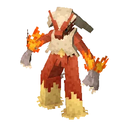
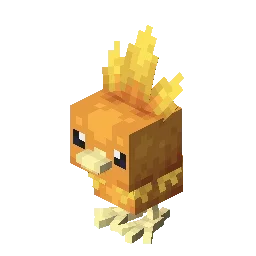
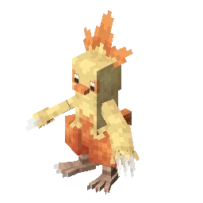
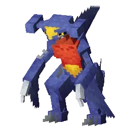
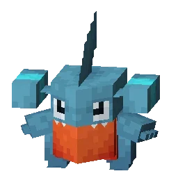
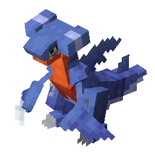
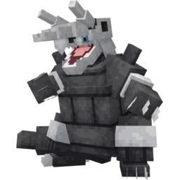
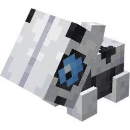
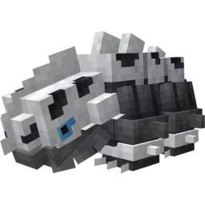

Meu time pokemon
Créditos
Todos os dados foram tirados do site Cobblemon e otimizados pela IA gemini, obrigado pela atenção
Blaziken

Blaziken é um pokemon do tipo fogo/lutador, inicial de hoen conquistado deis do inicio da minha jornada como torchic, simplesmente meu melhor pokemon, extremamente forte e veloz
Melhores ataques
- Flare Blitz
- Tipo: Fogo
- Descrição:O Blaziken se envolve em chamas intensas e se joga contra o oponente em uma investida devastadora. É o ataque de Fogo físico mais forte que ele pode aprender naturalmente.
- Efeito Colateral: Ele causa um dano massivo, mas o impacto é tão forte que o Blaziken recebe um terço do dano causado de volta como recuo (recoil). Também tem uma pequena chance de queimar o alvo.
- High Jump Kick
- Tipo: Lutador
- Descrição: Um chute voador espetacular feito do topo de um salto massivo. Aproveita toda a força das pernas longas e musculosas do Blaziken.
- Efeito Colateral: Tem um poder de destruição gigantesco, mas carrega um risco alto. Se o ataque errar (ou se o oponente usar um movimento de proteção como Protect), o Blaziken cai no chão e perde metade da sua vida máxima pelo impacto.
- Close Combat
- Tipo:Lutador
- Descrição: O Blaziken abandona totalmente a sua defesa e parte para cima do rival com uma sequência rápida e furiosa de socos e chutes à queima-roupa.
- Efeito colateral: Garante um dano altíssimo e muito seguro (não erra como o High Jump Kick), mas reduz a Defesa e a Defesa Especial do Blaziken em um nível logo após o uso, deixando-o vulnerável a contra-ataques.
- Sword Dance
- Tipo: Normal
- Descrição: Um movimento de preparação onde o Blaziken realiza uma dança de batalha frenética para focar o seu espírito de luta.
- Efeito colateral: Não causa dano direto, mas aumenta o Ataque do Blaziken em dois níveis instantaneamente. Se você usar esse movimento e sobreviver, os próximos ataques físicos dele vão derrubar quase qualquer oponente com um único golpe.
Evoluções


Historia
Na história do anime de Pokémon, o Blaziken teve um papel lendário. Ele foi introduzido de surpresa no final da Liga Johto, antes mesmo da terceira geração de jogos ser lançada.
Um treinador chamado Harrison usou um Blaziken para enfrentar o Charizard do Ash. Foi uma das batalhas mais viscerais da história do desenho. O Blaziken conseguiu vencer o Charizard em uma disputa épica de fogo e chutes, apresentando a região de Hoenn de forma impactante para os fãs e consolidando a sua fama de "badass".
A Ascensão da Megaevolução: Anos mais tarde, na franquia Pokémon X e Y, Blaziken recebeu uma forma ainda mais poderosa. Ao usar a Blazikenite, ele atinge a Megaevolução, onde suas chamas ficam amarelas, sua velocidade se torna insana e ele passa a ser considerado um dos Pokémon mais perigosos de todo o universo competitivo.
Top 15 Ataques
Ataques
Créditos
Todos os dados foram tirados do site Cobblemon e otimizados pela IA gemini, obrigado pela atenção
Garchomp

Garchomp é um pokemon do tipo dragão/terra, um pseudolendario muito dificil de conquista, eu adquiri ele após o betão achar ele em um lugar aleatorio, um dos meus melhores pokemons e ainda voa
Melhores ataques
- Earthquake
- Tipo: Terrestre
- Descrição: O Garchomp desencadeia um tremor devastador no solo que atinge todos ao seu redor.
- Por que é bom: É um dos ataques mais consistentes do jogo. Tem 100 de poder base, 100% de precisão, nenhum efeito colateral negativo e recebe o bônus de tipo (STAB), tornando-se o golpe de assinatura de qualquer Garchomp.
- Outrage/Dragon Claw
- Tipo: Dragão
- Descrição: No Outrage, o Garchomp entra em uma fúria cega atacando por 2 a 3 turnos. No Dragon Claw, ele faz um corte rápido e preciso com suas garras afiadas.
- Efeito colateral: O Outrage tem um poder colossal (120), mas deixa o Garchomp confuso após o término do efeito. O Dragon Claw é mais fraco (80), mas é totalmente seguro e controlado.
- Swords Dance
- Tipo: Normal
- Descrição: O Garchomp afia suas garras e foca seu espírito de luta para o combate.
- Efeito colateral: Aumenta o já gigantesco Ataque do Garchomp em dois níveis. Após um único Swords Dance, quase nenhum Pokémon na história consegue resistir a um Earthquake vindo dele.
- Stone Edge/Fire Fang
- Tipo: Rocha/Fogo
- Descrição: Ataques de cobertura. Stone Edge esmaga oponentes com pedras afiadas, enquanto Fire Fang morde com dentes flamejantes.
- Por que usar: Servem para cobrir as fraquezas do Garchomp. Stone Edge lida com Pokémon voadores, e Fire Fang derrete Pokémon do tipo Aço (como Skarmory ou Corviknight) que tentam barrar o seu Terremoto.
Evoluções


Historia
Na história dos jogos (Geração 4), o Garchomp ganhou status de lenda viva por causa de Cynthia, a campeã de Sinnoh.
Diferente de outros campeões que usavam Pokémon mais lentos ou previsíveis, o Garchomp de Cynthia tinha os atributos perfeitos (IVs e EVs no máximo nos jogos clássicos e nos remakes). Ele entrava em campo, superava a velocidade do Pokémon do jogador e varria times inteiros com Earthquake e Dragon Rush. Ele se tornou o símbolo máximo de dificuldade na franquia Pokémon.
No anime, o Garchomp da Cynthia é retratado como um titã quase invencível, batalhando de igual para igual contra Pokémon Lendários e brilhando no Torneio dos Oito Mestres na jornada de Ash Ketchum.
A Maldição da Megaevolução: Na Geração 6, Garchomp ganhou uma Megaevolução, mas a sua história aqui ganha um tom trágico. A energia da megaevolução derrete suas asas e as transforma em foices gigantescas. O poder o deixa com tanta raiva e dor que ele perde parte de sua velocidade icônica para ganhar força bruta pura, preferindo rasgar o chão a voar.
Top 15 ataques
Ataques
Créditos
Todos os dados foram tirados do site Cobblemon e otimizados pela IA gemini, obrigado pela atenção
Aggron

Aggrom é um pokemon comum de se achar, porém muito forte. Geralmente utilizado como tank para diminuir a ofensividade de pokemons do tipo lutador
Melhores ataques
- Head Smash
- Tipo: Rocha (Físico)
- Descrição: O Aggron joga todo o peso de sua cabeça blindada contra o inimigo em uma investida brutal de energia rochosa.
- Por que é perfeito nele: Tem um poder base colossal de 150. Normalmente, esse golpe causa um recuo enorme que tira metade da vida do usuário, mas o Aggron possui a habilidade Rock Head (Cabeça de Rocha), que anula totalmente o dano de recuo. Ele pode usar esse ataque destrutivo livremente sem se machucar.
- Heavy Slam
- Tipo: Aço
- Descrição: O Aggron joga seu corpo inteiro de 360 kg para esmagar o oponente sob o seu peso.
- Por que funciona: O poder desse movimento aumenta quanto mais pesado o Aggron for em comparação ao seu alvo. Como ele é um dos Pokémon mais massivos que existem, o golpe quase sempre atinge o potencial máximo de dano.
- Iron Head
- Tipo: Aço
- Descrição: Um ataque direto onde ele bate contra o alvo usando sua testa dura como chapa de metal.
- Efeito colateral: Possui 80 de poder base e uma ótima precisão de 100%. Além disso, tem 30% de chance de fazer o oponente fraquejar (flinch), impedindo-o de atacar no turno se o Aggron agir primeiro.
- Earthquake
- Tipo: Ground
- Descrição: O Aggron bate seus pés pesados com força no chão, rachando a terra e gerando ondas de choque subterrâneas.
- Por que usar: É um ataque essencial de cobertura para atingir Pokémon do tipo Fogo, Elétrico ou outros tipos de Aço que tentem resistir aos seus golpes principais.
Evoluções


Historia
Apesar de parecer um monstro de metal destruidor, o Aggron possui um instinto ecológico fortíssimo. Ele reivindica uma montanha inteira como seu território pessoal e a protege ferozmente.
Se o seu lar sofrer danos por conta de incêndios florestais, deslizamentos de terra ou inundações, o Aggron agirá como um protetor ambiental: ele carregará terra fresca nos braços e plantará novas árvores, cuidando pessoalmente do solo até que sua montanha recupere totalmente a beleza natural.
O corpo do Aggron é cheio de ranhuras, arranhões e amassados. Para a espécie, essas cicatrizes de ferro não são defeitos; são medalhas de honra. Quanto mais danificada for a armadura de um Aggron, mais confrontos ele venceu para proteger seu território, ganhando o respeito imediato de outros da sua espécie.
A Armadura Absoluta (Megaevolução): Ao megaevoluir para Mega Aggron, a energia da transformação derrete o seu tipo Rocha, tornando-o um Pokémon do tipo Aço Puro. Sua armadura cresce tanto que cobre todo o seu corpo, e ele ganha a habilidade Filter, que reduz o dano sofrido por golpes super efetivos. Ele se transforma em uma das barreiras defensivas mais intransponíveis do universo Pokémon.
Top 15 ataques
Ataques